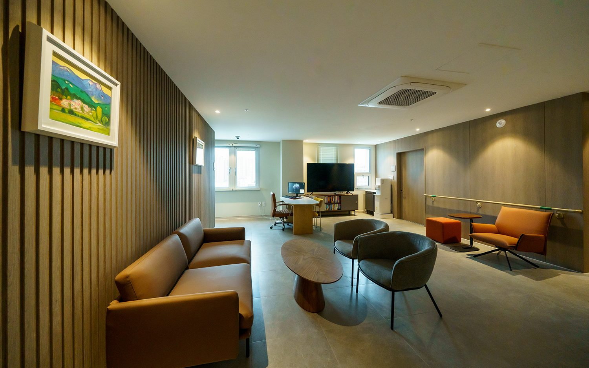
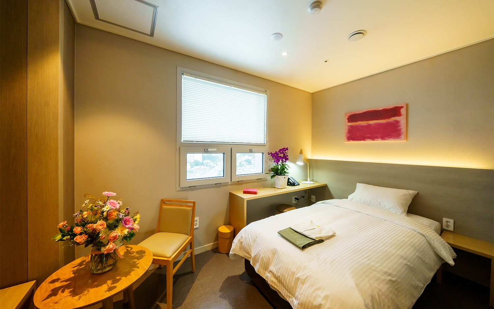

암요양병원 입원, 무엇을 준비하고 입원 중에는 어떻게 지내나요?
입원 서류는 소견서 또는 진료기록지 중 하나, 신분증, 피검사 결과지입니다. 입원을 정하신 환자분과 보호자분이 상담 전에 궁금해하시는 서류, 첫날, 병실, 간병, 보호자 없이 입원할 수 있는지, 야간 대응을 모았습니다.

- 서류
- 소견서 또는 진료기록지 중 하나 · 신분증 · 피검사 결과지
- 병실
- 1인실 위주
- 면회
- 오시는 길·면회 안내에서 확인
- 야간
- 의료진이 24시간 상주합니다.
- 문의
- 원내 상담실 · 카카오톡 채널 · 062-439-1000
입원 서류

소견서를 받기 어려우시면 지금까지의 진료 기록이 담긴 진료기록지만 발급받아 오셔도 됩니다.
진료기록지는 환자분이 요청하시면 대학병원·암병원·종합병원 의무기록실에서 발급받는 서류입니다.
입원 절차
입원 상담과 예약은 원내 상담실에서 도와 드립니다.
첫 상담은 전화나 카카오톡 채널로 원내 상담실에 하시면 됩니다. 전화 상담만으로 입원까지 정해지는 분이 많습니다.
방문 상담은 2층 상담실에서 합니다. 치료 일정 담당자와는 처음 한 번 2층 상담실에서 만나시고, 그 뒤의 치료 일정과 계획은 카카오톡 채널로 주고받습니다.
몸 상태에 따라서는 전화 상담만으로 정하지 않고 방문 상담이나 외래 진료에서 주치의가 먼저 확인한 뒤 입원을 정하기도 합니다.
입원 상담 때는 받으신 수술 명칭, 관 삽입 여부, 앞으로의 치료 일정을 알려 주시면 됩니다.
다른 병원에서 받아 오신 약은 입원하실 때 알려 주시면 원내 처방과 함께 관리해 드립니다.
준비물은 입원이 확정되면 원내 상담실이 따로 안내해 드립니다.
입원 첫날
입원 첫날에는 서류를 접수하면 가져오신 약과 검사 결과를 병동 간호사가 기록하고, 이어서 주치의 진료와 식사 처방, 병동 안내가 차례로 이어집니다.
입원 첫날 몇 시까지 오시면 되는지, 저녁 늦게 도착해도 접수가 되는지는 미리 원내 상담실에 문의해 주세요.
입원 기간은 몸 상태와 치료 일정을 보고 진료에서 정합니다. 지내 보시고 늘리거나 앞당겨 퇴원하실 수도 있습니다.
병실
병실은 1인실 위주로 구성되어 있습니다.
1인실이 많고, 2인실과 4인실도 있습니다.


바깥과의 접촉을 줄이기 위해 되도록 1인실을 쓰시도록 하고 있습니다.
- 모든 병실에 샤워실, 화장실, 냉장고, 옷장이 따로 있습니다
사계절 쾌적한 공기와 온도
- 바닥 난방이라 겨울에도 따뜻합니다
- 병실마다 온도를 따로 맞추실 수 있는 에어컨과 히터가 있습니다
- 공기청정 시스템으로 공기를 쾌적하게 관리합니다
상급병실은 VIP실, 특실, 1인실, 2인실입니다. 병실료는 비급여 항목 안내 페이지의 표에서 확인하실 수 있습니다.
식사
입원 중 식사는 주치의가 환자분 상태에 맞춰 처방하고, 치료식(일반식 · 항암식 · 위절제식 · 저잔사식 · 저염식 · 저요오드식 등) 가운데에서 고릅니다.

입원 첫날부터 식사 이야기를 나눕니다.
영양컨시어지가 주기적으로 드신 양과 식후 불편한 점을 확인하고, 드시는 양이 줄면 주치의가 식사 종류나 밥 형태를 다시 처방합니다.
식사 장소는 스카이라운지 식당이며, 병실에서 받아 드실 수도 있습니다.
보호자 식사도 환자분 식사와 함께 주문하실 수 있습니다.
특식데이에는 식당까지 오시기 어려운 날에도 병실에서 같은 한 끼를 드실 수 있도록 준비해 드립니다.
이번 주 식단표는 카카오톡 채널 소식에서 보실 수 있습니다. 식단은 시장 수급과 영양실 사정에 따라 달라질 수 있습니다.
입원 중 하루
아침에는 병동 간호사가 밤사이 불편한 곳이 없었는지, 잠은 잘 주무셨는지 여쭙고, 말씀하신 증상은 주치의에게 보고해 처방으로 이어집니다.
낮에는 주치의 처방에 따라 회복치료를 받으십니다. 회복치료는 고주파온열암치료·고압산소치료·도수치료·림프 관리·고용량 비타민C·면역 주사제·영양공급수액입니다.
입원 중 대학병원·암병원 외래 진료
입원 중 대학병원·암병원 외래 진료와 진료의뢰서 안내는 단기입원·외래 안내에서 확인하실 수 있습니다.
입원 중에도 대학병원·암병원 외래 일정은 그대로 이어 갑니다. 요양병원에 입원한 채 다른 병원 외래 진료를 받으려면 진료의뢰서가 필요한데, 이 서류는 환자분이 준비하시는 것이 아니라 하일렌요양병원 주치의가 써 드립니다.
외래 전날에 병동 간호사가 다음 날 대학병원·암병원에 가실 분의 명단을 확인합니다. 그래서 외래 날짜가 정해지거나 바뀌면 늦어도 전날까지는 병동 간호사에게 알려 주세요.
대학병원·암병원에서 돌아오시면 그날 들으신 검사 결과, 받아 오신 약, 그리고 다음 일정, 이 셋을 병동 간호사에게 알려 주세요. 병동 간호사가 적어 두고, 주치의가 원내 처방과 묶어 관리합니다.
수술 부위 회복 — 주사·상처관리 전담팀
수술 부위는 수술받으신 병원의 지침 그대로 주사·상처관리 전담팀이 이어서 살펴 드립니다. 소독 여부와 간격은 대학병원·암병원 지침대로 하고, 소독 자체는 원내에서 합니다.
입원 중 케모포트로 들어가는 수액과 약물 투여, 소독, 바늘 관리는 대학병원·암병원 지침 그대로 원내 의료진과 주사·상처관리 전담팀이 살펴 드립니다.
케모포트로 항암제를 맞으시는 중에 입원하시면 케모포트 관리와 제거도 대학병원·암병원 지침에 따라 해 드립니다.
회복하시는 동안 대학병원·암병원 진료가 필요하다고 보이면 안내해 드립니다.
이동과 교통편이 궁금하시면 병원으로 문의해 주세요.
간병 안내
하일렌요양병원은 회복하는 곳입니다.
하일렌요양병원에는 간병사와 간병비가 없습니다.
간병이 따로 필요 없거나 단기간의 가족 간병으로 충분하신 분이 입원하십니다. 보호자께서 함께 지내실지는 입원 상담 때 여쭤 보고 안내해 드립니다.
오랜 기간 간병이 필요하신 분께는 그에 맞는 일반 요양병원을 안내해 드립니다.
면회
면회 기준과 주소·교통은 오시는 길·면회 안내에서 확인하실 수 있습니다.

야간 대응
의료진이 24시간 상주하고, 밤에도 당직 의료진이 확인해 처방합니다.
원내에서 혈액검사와 흉부 엑스레이 촬영을 하고, 그날 바로 주치의가 결과를 확인합니다.
밤에 열이 나거나 몸 상태가 달라지면 병동 간호사에게 말씀해 주세요. 병동 간호사가 주치의에게 보고하고, 당직 의료진이 확인해 처방합니다.
하일렌요양병원에는 자체 응급실이 없습니다.
응급 상황이 생기면 먼저 상태를 안정시킨 뒤 상급종합병원으로 신속히 옮겨 드립니다.
자주 묻는 질문
입원할 때 어떤 서류가 필요한가요?
입원 서류는 소견서 또는 진료기록지 중 하나, 신분증, 피검사 결과지입니다. 소견서를 받기 어려우시면 지금까지의 진료 기록이 담긴 진료기록지만 발급받아 오셔도 됩니다.
병실은 어떻게 되어 있나요?
병실은 1인실 위주로 구성되어 있습니다. 바깥과의 접촉을 줄이기 위해 되도록 1인실을 쓰시도록 하고 있습니다.
입원 첫날은 어떻게 진행되나요?
첫날에는 서류를 접수하고, 가져오신 약과 검사 결과를 기록한 뒤 주치의가 진료합니다. 이어서 식사를 처방하고 병동을 안내합니다. 드시던 약은 봉투째 그대로 가져오시면 됩니다. 입원 첫날부터 식사 이야기를 나눕니다.
지금 먹는 약을 가져가도 되나요?
네, 혈압약, 당뇨약처럼 늘 드시는 약이 여러 가지여도 입원하실 수 있습니다. 약은 정리하지 마시고 봉투째 그대로 가져와 주세요. 병동 간호사가 약 이름·드시는 방법·남은 일수를 적어 두고, 주치의는 그 기록을 원내 처방과 나란히 놓고 봅니다. 당뇨가 있는 분은 입원 중 병동에서 혈당을 재어 주치의에게 알리고, 인슐린을 쓰시는 분은 그 결과를 본 주치의가 용량을 그때그때 정합니다.
입원 중 주치의는 무엇을 하나요?
입원 첫날 주치의가 진료하고, 드시던 약을 원내 처방과 함께 봅니다. 그 뒤로도 치료 사이사이의 몸 상태는 하일렌요양병원의 주치의가 진료하며 살핍니다. 혈액검사와 흉부 엑스레이 촬영은 원내에서 하고, 그날 바로 주치의가 결과를 확인합니다. 치료식은 주치의가 환자분 상태에 맞춰 처방합니다. 어디까지 움직여도 되는지는 주치의가 몸 상태를 살피고 환자분과 이야기를 나눈 뒤 함께 정합니다. 입원 기간도 다음 치료 일정과 몸 상태를 보고 주치의가 환자분과 상의해 맞춰 갑니다. 입원 중 다른 병원 외래 진료에 필요한 진료의뢰서도 원내 주치의가 써 드립니다. 수술이나 항암을 계속할지 같은 치료 방향은 지금 다니시는 대학병원·암병원 담당의의 판단을 따릅니다.
입원 기간은 보통 얼마나 되나요?
모든 분께 똑같이 정해진 기간은 없습니다. 단기입원은 1박 2일부터 치료 일정에 맞춰 이용하실 수 있고, 기간은 대학병원·암병원에서 잡아 준 일정과 지금 몸 상태·드시는 양, 집에서 지낼 여건을 보고 주치의가 진료에서 환자분과 상의해 정합니다. 한 번 정한 기간도 치료 일정이나 몸 상태가 달라지면 주치의와 상의해 다시 맞추실 수 있습니다. 입원 일정 상담은 원내 상담실에서 안내해 드립니다.
입원 중 대학병원·암병원 외래 날에는 어떻게 다녀오나요?
대학병원·암병원 외래 날이 오면 그날 다녀오시고 다시 병실로 돌아와 회복을 이어 가시면 됩니다. 그날 필요한 진료의뢰서는 원내 주치의가 써 드립니다. 외래 날과 입원 일정을 맞추는 방법은 단기입원·외래 안내에서 확인하실 수 있습니다.
방사선 치료를 매일 다니면서 입원할 수 있나요?
방사선 치료는 지금 다니시는 대학병원·암병원에서 그대로 받으시고, 그 사이의 회복은 하일렌요양병원이 입원과 외래로 함께 돌봐 드립니다. 입원 중에 대학병원·암병원 외래나 치료 날이 오면 그날 다녀오시고 다시 병실로 돌아와 회복을 이어 가시면 됩니다. 그날 필요한 진료의뢰서는 원내 주치의가 써 드립니다. 치료일의 이동과 교통편은 병원으로 문의해 주세요.
식사는 어떻게 나오나요?
입원 중 식사는 주치의가 환자분 상태에 맞춰 처방하고, 치료식(일반식 · 항암식 · 위절제식 · 저잔사식 · 저염식 · 저요오드식 등) 가운데에서 고릅니다. 입원 첫날부터 식사 이야기를 나눕니다.
준비물과 세탁, 병실 생활 규칙은 어떻게 되나요?
입원 서류는 소견서 또는 진료기록지 중 하나, 신분증, 피검사 결과지이고, 드시던 약은 봉투째 그대로 가져오시면 됩니다. 수건·세탁과 소음·소등 같은 병실 생활 규칙은 입원 상담 때 원내 상담실에서 안내해 드립니다.
보호자 없이 입원할 수 있나요?
네, 혼자 생활하실 수 있으면 보호자 없이 입원하셔도 됩니다. 보호자께서 곁에 계시지 않아도 의료진이 24시간 상주하고, 밤에도 당직 의료진이 확인해 처방합니다. 보호자께서 함께 지내시려면 특실이나 1인실을 쓰시면 되고, 보호자께서 함께하실지와 원하시는 병실은 입원 전에 원내 상담실이 미리 여쭙습니다. 하일렌요양병원에는 간병사와 간병비가 없습니다. 오랜 기간 간병이 필요하신 분께는 그에 맞는 일반 요양병원을 안내해 드립니다. 면회 기준은 오시는 길·면회 안내에서 보실 수 있습니다. 보호자 식사도 환자분 식사와 함께 주문하실 수 있습니다. 밤에 생기는 증상은 병동 간호사가 확인하고 당직 의료진에게 알립니다.
혼자 걷기 힘들어도 입원할 수 있나요?
혼자 걷기 힘드시면 입원이 될지 걱정되실 겁니다. 수술 직후나 항암 뒤 며칠처럼 지나가는 상태라서 혼자 걷기 힘드신 것이라면 그 며칠 동안 회복 입원을 하실 수 있습니다. 도와 드릴 사람이 늘 곁에 있어야 하는지는 먼저 상담에서 함께 살펴봅니다.
장기간 간병이 필요한 경우에도 입원할 수 있나요?
하일렌요양병원은 회복하는 곳입니다. 하일렌요양병원에는 간병사와 간병비가 없습니다. 오랜 기간 간병이 필요하신 분께는 그에 맞는 일반 요양병원을 안내해 드립니다.
입원 자리가 없으면 어떻게 하나요?
원하시는 날에 들어가실 1인실이 비어 있지 않을 때는 자리가 없다고 있는 그대로 말씀드립니다. 그럴 때는 외래부터 시작하시는 방법도 있습니다.
1인실 비용은 하루 얼마인가요?
상급병실료를 포함한 비급여 항목과 금액은 기준일을 밝힌 표로 비급여 항목 안내에 게시합니다. 1인실 하루 비용은 그 표와 자주 묻는 질문의 「하일렌요양병원 상급병실료는 하루 얼마인가요?」에서 확인하실 수 있습니다. 상급병실료는 건강보험이 적용되지 않아 전액 본인 부담입니다.
보호자 면회는 언제 할 수 있나요?
면회 기준은 오시는 길·면회 안내에서 확인하실 수 있습니다.
밤에 아프면 누가 봐주나요?
의료진이 24시간 상주하고, 밤에도 당직 의료진이 확인해 처방합니다. 하일렌요양병원에는 자체 응급실이 없습니다. 응급 상황이 생기면 먼저 상태를 안정시킨 뒤 상급종합병원으로 신속히 옮겨 드립니다.
입원 상담과 예약은 원내 상담실에서 도와 드립니다.
제공 하일렌요양병원 · 갱신 2026-10-21